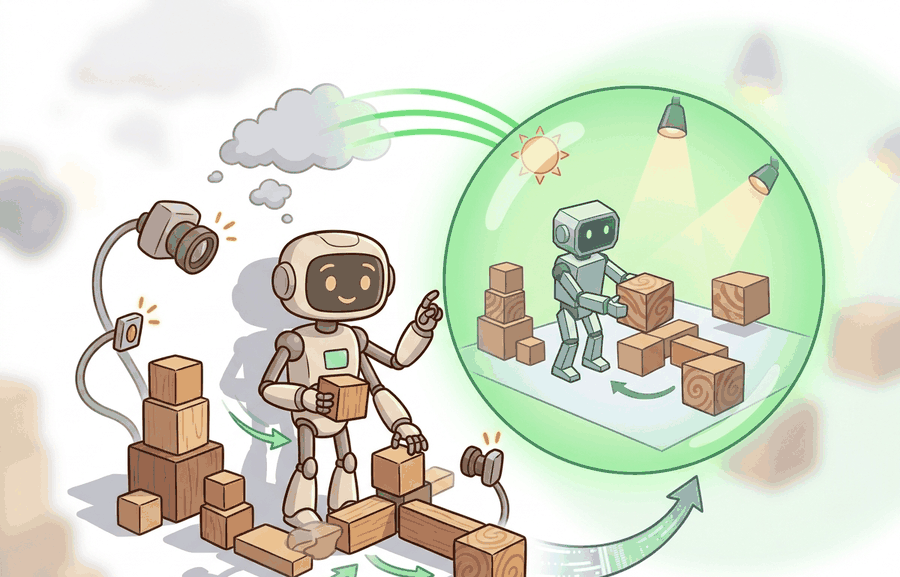

"Scan the room, reconstruct it in simulation, train a policy, send it home. The physical world is both the source and the destination."
Section 13.5

real2sim2real starts from real measurements, reconstructs a simulator from them, trains or evaluates inside that simulator, then returns to the real system for validation. Asset and scene reconstruction reduce guesswork, but they also create a leakage risk if the same real objects, rooms, camera paths, or episodes are used for both calibration and final evaluation.
For real2sim2real and asset/scene reconstruction, the transfer argument should name which simulator gap is randomized, which real variable it approximates, and which evaluation panel checks whether transfer improved.
What This Section Builds
This section makes real2sim2real operational. It distinguishes reconstruction inputs, such as scans, meshes, camera calibration, object dimensions, and contact measurements, from evaluation outputs such as real success, pose error, slip, collision, or recovery rate.
The goal is to build a simulator that is anchored to reality without becoming a benchmark mirror. A digital twin should explain what was measured, what was inferred, and what remains randomized.
Reconstruction is not automatically evidence. It becomes evidence when the calibration set, reconstructed parameters, residual randomization ranges, and untouched real holdout set are all named.
Theory
Consider a specific case: in the OpenAI dexterous hand project (Andrychowicz et al., 2019, "Learning Dexterous In-Hand Manipulation"), the team measured a physical Rubik's cube with calipers and structured light, anchored the simulator mesh to those measurements (face length 57 mm, corner radius 3 mm), then randomized residual friction (coefficient 0.5 to 1.5), mass, and appearance around those anchors. The held-out evaluation used cubes from a different production batch. Transfer succeeded on foam cubes and gilded cubes the policy had never seen, because residual randomization covered manufacturing variation while the anchored geometry kept the contact model plausible. That sequence, measure, anchor, randomize residual, evaluate on held-out objects, is the real2sim2real loop in practice.
The real2sim2real loop has four steps. First, measure the real environment: geometry, material appearance, camera calibration, object dimensions, mass, friction, and task layout. Second, reconstruct an asset or scene representation. Third, randomize residual uncertainty around the reconstruction, because the scan is never the whole world. Fourth, evaluate transfer on real conditions held out from reconstruction.
The critical split is calibration versus evaluation. Calibration data may tune mesh scale, camera intrinsics, contact parameters, and lighting priors. Evaluation data must remain separate, otherwise the digital twin can memorize the test room, test object, or test camera path.
The mechanism is measured anchoring plus residual uncertainty. Reconstruction narrows the randomization range, and residual randomization covers what the reconstruction did not capture.
Worked Example
The following snippet turns measured object dimensions into a residual randomization range. The simulator is anchored to the real measurement, but the training distribution still covers small reconstruction and manufacturing errors.
# Convert real calibration measurements into residual randomization ranges.
# The holdout object is excluded, so range fitting does not leak evaluation data.
calibration_lengths_cm = [9.8, 10.1, 10.0, 9.9]
margin_cm = 0.3
low = min(calibration_lengths_cm) - margin_cm
high = max(calibration_lengths_cm) + margin_cm
holdout_object = "object_E, unseen during reconstruction"
print(f"length_range_cm=({low:.1f}, {high:.1f})")
print(f"holdout={holdout_object}")holdout_object records what was excluded from fitting. This is the core real2sim2real discipline: use real measurements to anchor simulation, then protect the final test from leakage.The from-scratch fragment is for understanding the calibration split. In a practical system, reconstruction tools, simulators, and robot logs should preserve which real measurements informed the digital twin and which real episodes were reserved for final evaluation.
Practical Recipe
- Split real data into calibration, validation-for-debugging, and final holdout sets before reconstruction.
- Record which assets were scanned, which parameters were fitted, and which parameters remain randomized.
- Randomize residual uncertainty around reconstructed values rather than treating the reconstruction as exact.
- Evaluate on real objects, scenes, or camera paths absent from the reconstruction set.
- Report failures as reconstruction error, residual range miss, simulator physics miss, perception miss, or policy miss.
A real2sim2real plan is evidence only when it names the calibration data, reconstructed parameters, residual randomization ranges, final real holdout, and failure labels. Without that split, a digital twin can become a polished copy of the test set.
The common mistake is reconstruction leakage. If the final evaluation scene was used to tune mesh cleanup, lighting, camera pose, friction, or object scale, the reported transfer score is partly a reconstruction fit.
A lab building a drawer-opening simulator might scan the drawer geometry, estimate handle pose, fit friction from calibration pulls, then randomize handle texture, rail friction, and camera pose around those measurements. The final test should use a different drawer or a different set of pulls that never shaped the reconstruction.
A digital twin is not a trophy. It is a measurement instrument with a calibration log.
A Gaussian splat is a digital twin made of foggy Christmas ornaments. Each ornament knows exactly where it is, but ask them collectively to catch a ball and you discover they are also deeply afraid of physics.
Reconstruction has diminishing returns past the point where residual randomization already covers the remaining gap. A practical signal: if tightening your mesh or friction fit by 10% does not change real holdout performance, the bottleneck has shifted to policy capacity, perception noise, or task specification rather than simulator fidelity. At that point, investing further in scan quality or contact-parameter tuning wastes calibration budget. The better action is to widen the residual randomization range or collect more diverse real holdout episodes to surface the true failure mode.
The frontier connects real-world capture, neural reconstruction, procedural editing, and policy training into faster real2sim2real loops. The open question is how much scene fidelity is needed before residual randomization and real holdout evidence dominate additional reconstruction detail.
Can you name the calibration set, reconstructed parameters, residual ranges, final holdout set, and leakage guard? If not, the real2sim2real experiment is still too vague.
real2sim2real and asset reconstruction become useful when the simulator is treated as an estimate with uncertainty. The reconstructed asset is the center of the distribution, not the full distribution.
The graduate-level habit is to separate three claims. The reconstruction claim says the digital twin matches measured calibration data. The residual claim says remaining uncertainty is randomized across plausible ranges. The evidence claim says final real performance is measured on conditions excluded from reconstruction.
| Tool or Library | Role in the Topic | Builder Advice |
|---|---|---|
| Photogrammetry or scan pipelines | Asset geometry capture | Use them to anchor mesh scale, object shape, and scene layout before adding residual randomization. |
| Neural scene reconstruction | View and appearance recovery | Use it when camera images can reconstruct useful appearance priors for the simulator. |
| MuJoCo or MJX | Fitted physical parameters | Use it when reconstructed geometry must be paired with mass, friction, damping, and actuator ranges. |
| ROS 2 bags | Calibration and holdout bookkeeping | Use them to separate episodes that fit the digital twin from episodes that test transfer. |
| LeRobot | Real policy validation | Use it to compare reconstructed-sim training against real trajectories and task outcomes. |
A robust implementation starts with a provenance record. Code Fragment 2 records the calibration source, residual range, final holdout, and leakage guard beside the transfer metric.
- Write a one-paragraph task contract with observation, action, success, and failure fields.
- Start with the smallest simulator, dataset, or wrapper that exposes the task contract faithfully.
- Run one deterministic smoke test and one perturbation test before scaling.
- Save a single result artifact containing configuration, seed, metrics, videos or traces, and failure labels.
- Compare methods only when one script evaluates them on the same task panel.
Expected output: the printed trace should expose calibration source, residual randomization, transfer metric, and leakage guard. If one of those fields is missing, the example is not yet an evaluation artifact.
When real2sim2real fails, separate scan error, mesh simplification error, contact-parameter miss, residual range miss, perception mismatch, and policy mismatch. Then adjust only the suspected reconstruction or residual range and rerun on the same final holdout. This preserves the evidence value of the holdout panel.
real2sim2real is useful when reconstructed assets anchor simulation, residual randomization covers uncertainty, and final transfer is measured on real conditions excluded from the reconstruction process.
Plan a real2sim2real workflow for one object or room. Specify calibration measurements, reconstructed parameters, residual randomization ranges, final holdout conditions, and the leakage guard.
Section 13.6 → compares randomization, realism, and hybrid strategies on one shared transfer-readiness panel.
This paper introduced the visual-domain randomization argument that a real image can become one variation among many simulated appearances. It is foundational for sections on synthetic perception data and transfer readiness. Readers should connect this source to real2sim2real and asset/scene reconstruction when deciding what is reusable, what is benchmark-specific, and what must be remeasured.
This paper studies randomized dynamics for robotic control transfer. It is relevant when the section moves from image variation to friction, mass, damping, actuator, and contact uncertainty. Readers should connect this source to real2sim2real and asset/scene reconstruction when deciding what is reusable, what is benchmark-specific, and what must be remeasured.
This work gives a theoretical view of domain randomization as transfer across a family of parameterized MDPs. Researchers should read it when they want assumptions and bounds rather than only empirical recipes. Readers should connect this source to real2sim2real and asset/scene reconstruction when deciding what is reusable, what is benchmark-specific, and what must be remeasured.
NVIDIA. "Omniverse Replicator Documentation."
Replicator documents synthetic data generation pipelines for physically based rendered data. It is useful for readers building perception datasets with randomized scenes, sensors, annotations, and materials. Readers should connect this source to real2sim2real and asset/scene reconstruction when deciding what is reusable, what is benchmark-specific, and what must be remeasured.
DLR-RM. "BlenderProc Documentation and Examples."
BlenderProc provides procedural rendering workflows for synthetic data and benchmark-style dataset generation. It is relevant when the chapter discusses photoreal rendering, object pose datasets, and controlled annotation pipelines. Readers should connect this source to real2sim2real and asset/scene reconstruction when deciding what is reusable, what is benchmark-specific, and what must be remeasured.